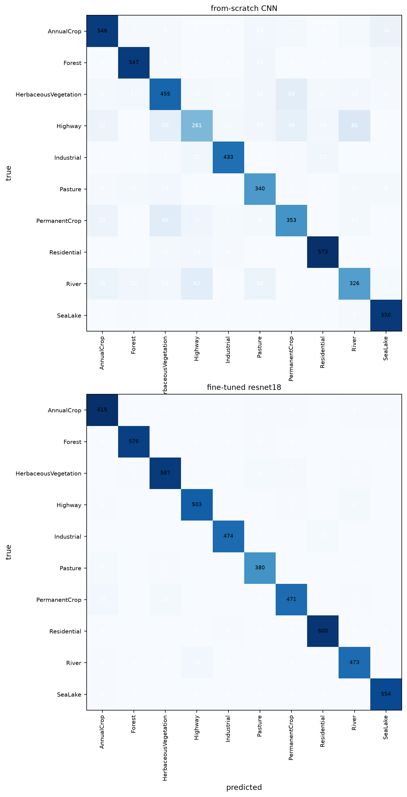
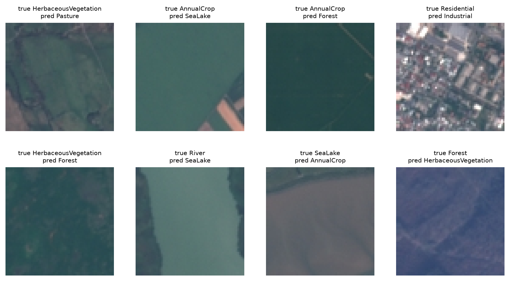

from pathlib import Path
import torch
from matplotlib import pyplot as plt
from torch import nn
from torch.utils.data import DataLoader, Subset
from torchvision.datasets import EuroSAT
from torchvision.models import resnet18
from torchvision.transforms import v2 as T
from torchmetrics.classification import MulticlassAccuracy, MulticlassConfusionMatrixEvaluating models
Accuracy only tells you so much. Before trusting a model, you should investigate which classes fail, whether the metric is inflated, and what the mistakes look like. In this section we look at confusion matrices, per-class scores, and analyse the worst errors.
Setup
device = (
torch.accelerator.current_accelerator()
if torch.accelerator.is_available()
else torch.device("cpu")
)
torch.manual_seed(42)
print(f"Torch version: {torch.__version__}\nDevice: {device}")Torch version: 2.13.0+cu130
Device: cudaWe evaluate on the validation split with its deterministic transform (never random at evaluation time):
root = Path("/project/def-sponsor00/data")IMAGENET_MEAN, IMAGENET_STD = [0.485, 0.456, 0.406], [0.229, 0.224, 0.225]
val_tf = T.Compose([
T.ToImage(),
T.ToDtype(torch.float32, scale=True),
T.Normalize(IMAGENET_MEAN, IMAGENET_STD),
])
eurosat = EuroSAT(root=root)
idx = torch.load(root / "split.pt", weights_only=True)
val = Subset(EuroSAT(root=root, transform=val_tf), idx["val"])
val_loader = DataLoader(
val, batch_size=64, num_workers=4, persistent_workers=True,
pin_memory=torch.accelerator.is_available(),
)
classes = eurosat.classes
print(len(val), "validation images")5400 validation imagesThe two models of the course
Both the from-scratch CNN and the fine-tuned ResNet-18 saved their best checkpoint along the way. We rebuild each architecture and restore its weights:
class Net(nn.Module):
"""A small CNN for 64x64 images and 10 classes."""
def __init__(self):
super().__init__()
self.layers = nn.Sequential(
nn.Conv2d(3, 32, 3, padding=1), nn.ReLU(), nn.MaxPool2d(2),
nn.Conv2d(32, 64, 3, padding=1), nn.ReLU(), nn.MaxPool2d(2),
nn.Conv2d(64, 128, 3, padding=1), nn.ReLU(),
nn.AdaptiveAvgPool2d(1),
nn.Flatten(),
nn.Linear(128, 10),
)
def forward(self, x):
return self.layers(x)
loss_fn = nn.CrossEntropyLoss() # batch mean, for metrics
per_sample_loss = nn.CrossEntropyLoss(reduction="none") # one loss per image
cnn = Net().to(device)
cnn.load_state_dict(torch.load(root / "best.pt", weights_only=True)["model"])
ft = resnet18(num_classes=10).to(device)
ft.load_state_dict(torch.load(root / "best_ft.pt", weights_only=True)["model"])<All keys matched successfully>for name, path in [("from-scratch CNN", root / "best.pt"),
("fine-tuned resnet18", root / "best_ft.pt")]:
ckpt = torch.load(path, weights_only=True)
print(f"{name}: best epoch {ckpt['epoch']}, saved val acc {ckpt['val_acc']:.1%}")from-scratch CNN: best epoch 14, saved val acc 80.8%
fine-tuned resnet18: best epoch 5, saved val acc 96.8%Collecting predictions
Everything in this section derives from one pass per model over the validation set: the predicted class, the true class, and the per-sample loss (cross-entropy with reduction="none" returns one loss per image instead of the batch mean, exactly what error analysis needs):
def collect_predictions(model):
"""Predictions, targets, and per-sample losses over the validation set."""
model.eval()
preds, targets, losses = [], [], []
with torch.inference_mode():
for x, y in val_loader:
x = x.to(device, non_blocking=True)
y = y.to(device, non_blocking=True)
logits = model(x)
preds.append(logits.argmax(dim=1).cpu())
targets.append(y.cpu())
# one loss per image: the batch mean is useless for finding bad cases
losses.append(per_sample_loss(logits, y).cpu())
return torch.cat(preds), torch.cat(targets), torch.cat(losses)
preds_cnn, targets, losses_cnn = collect_predictions(cnn)
preds_ft, _, losses_ft = collect_predictions(ft)
print(preds_cnn.shape, targets.shape, losses_cnn.shape)torch.Size([5400]) torch.Size([5400]) torch.Size([5400])The two models are compared on identical targets: the same images, in the same order.
Confusion matrices
A confusion matrix crosses true classes (rows) against predicted classes (columns): the diagonal holds the correct calls, everything off it is a specific, named mistake:
cm_metric = MulticlassConfusionMatrix(num_classes=10)
cm_cnn = cm_metric(preds_cnn, targets)
cm_ft = cm_metric(preds_ft, targets)
print(cm_cnn.diagonal().sum().item(), "correct of", len(targets), "for the CNN")4384 correct of 5400 for the CNNdef plot_cm(ax, cm, title):
cm = cm.cpu()
ax.imshow(cm, cmap="Blues")
ax.set_xticks(range(10), classes, rotation=90, fontsize=8)
ax.set_yticks(range(10), classes, fontsize=8)
ax.set_xlabel("predicted")
ax.set_ylabel("true")
ax.set_title(title, fontsize=10)
for i in range(10):
for j in range(10):
# white text on dark cells, black on light ones
color = "white" if cm[i, j] < cm.max() / 2 else "black"
ax.text(j, i, int(cm[i, j]), ha="center", va="center",
fontsize=7, color=color)
fig, axes = plt.subplots(2, 1, figsize=(9.7, 17))
plot_cm(axes[0], cm_cnn, "from-scratch CNN")
plot_cm(axes[1], cm_ft, "fine-tuned resnet18")
Reading the two matrices side by side:
- The CNN’s errors concentrate in a few cells: agriculture classes confused with each other, linear features confused with each other. We predicted both confusions when the class list first appeared.
- The fine-tuned model’s matrix is almost diagonal: pretraining did not just add percentage points, it removed whole families of mistakes.
- The remaining errors are not random. They sit in the same cells the CNN struggled with, just much thinner: those are the genuinely ambiguous patches.
Per-class metrics
Accuracy averages over images, so common classes dominate it. Recall per class (the fraction of each true class correctly found) exposes the classes a model quietly fails on:
recall = (cm_ft.diagonal() / cm_ft.sum(dim=1)).cpu()
for name, r in zip(classes, recall):
print(f"{name:>22} {r:5.1%}") AnnualCrop 97.5%
Forest 99.0%
HerbaceousVegetation 95.9%
Highway 95.8%
Industrial 97.9%
Pasture 96.0%
PermanentCrop 93.1%
Residential 99.0%
River 95.2%
SeaLake 98.8%When every class should matter equally (rare disease, minority dialect, endangered species), average the per-class scores instead of the images. This is macro averaging, and torchmetrics makes it explicit:
micro = MulticlassAccuracy(num_classes=10)
macro = MulticlassAccuracy(num_classes=10, average="macro")
print(f"CNN micro {micro(preds_cnn, targets):5.1%} macro {macro(preds_cnn, targets):5.1%}")
print(f"resnet micro {micro(preds_ft, targets):5.1%} macro {macro(preds_ft, targets):5.1%}")CNN micro 80.8% macro 80.8%
resnet micro 96.8% macro 96.8%On EuroSAT the two numbers sit close together: the classes are only mildly imbalanced, as we measured at the start. The habit matters more than this particular result: report macro scores whenever class imbalance exists, and say which one you report.
Test-set hygiene
There is a bias in everything we computed above, and it deserves its own paragraph.
Our validation set selected the models: early stopping read it every epoch, and the best checkpoint was chosen by its accuracy. Evaluate on data that influenced training and you measure optimism, not just performance. The effect is small here (we never trained on those images), but it grows with every decision taken by looking at the score.
The clean protocol is a third split:
- Training set: parameters learn from it.
- Validation set: every decision during development reads it (epochs, learning rates, architectures).
- Test set: locked away, touched exactly once, at the end, by the final model.
EuroSAT’s 27,000 images make this easy to afford; on smaller data, cross-validation is the standard alternative. In this course we keep evaluating on the validation split and stay conscious of the optimism: the comparisons between our models are fair (they all peeked equally), the absolute numbers are mildly inflated.
Error analysis
Metrics summarize; images explain. The most instructive objects in deep learning are a model’s worst confident mistakes, and we already have everything needed to find them: sort the validation images by their per-sample loss under the fine-tuned model:
worst = losses_ft.argsort(descending=True)[:8]
fig, axes = plt.subplots(2, 4, figsize=(11.6, 6.2))
for ax, i in zip(axes.flat, worst):
x, y = val[i] # normalized tensor, CHW
x = x * torch.tensor(IMAGENET_STD).view(3, 1, 1) \
+ torch.tensor(IMAGENET_MEAN).view(3, 1, 1) # undo Normalize for display
ax.imshow(x.permute(1, 2, 0).clamp(0, 1))
ax.set_title(f"true {classes[y]}\npred {classes[preds_ft[i]]}", fontsize=8)
ax.axis("off")
A few things typically stand out in such a gallery:
- Agriculture classes dominate:
AnnualCropandPermanentCropdiffer by what grows in the field, and in early-season images even humans hesitate. Every land-use classifier we have seen struggles exactly there. - Some patches are borderline by construction: a highway crossing a residential area, a river bank with pasture.
- Occasional errors look flat-out mislabelled. Datasets are annotated by people, and EuroSAT is no exception. Error analysis doubles as data-quality control.
This is the loop of honest evaluation: a metric you trust, a matrix that names the failures, and your own eyes on the failures. The next step after this loop, when the model is good enough, is taking it to bigger hardware.
Your turn:
Which classes gained the most from pretraining? Compute the per-class recall of both models and print the difference, largest first.
- Hint:
recall_cnnfollows the same one-liner asrecallabove. - Hint: to sort by difference and keep the names attached,
sorted(zip(classes, diff), key=lambda t: -t[1])works.